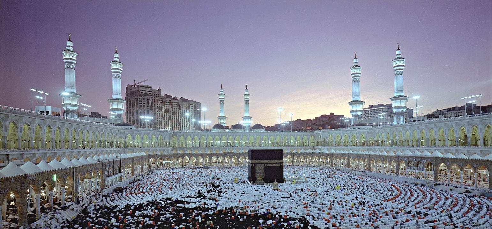

Panduan Umrah: Segala yang Perlu Anda Ketahui

Umrah adalah salah satu ibadah yang sangat dicintai oleh umat Islam. Berbeda dengan haji, umrah dapat dilakukan kapan saja sepanjang tahun. Dalam artikel ini, kami akan membahas berbagai aspek penting tentang umrah, mulai dari niat hingga tata cara pelaksanaannya.
1. Niat Umrah
Niat merupakan bagian penting dalam setiap ibadah. Untuk umrah, niat dilakukan sebelum memasuki ihram. Bacalah niat umrah dalam hati dan siapkan diri untuk menjalankan ibadah ini dengan sepenuh hati.
2. Rukun dan Syarat Umrah
Terdapat beberapa rukun dan syarat yang harus dipenuhi dalam pelaksanaan umrah. Di antaranya adalah mengenakan ihram, melakukan tawaf, dan sai antara Safa dan Marwah.
3. Waktu Pelaksanaan Umrah
Umrah dapat dilakukan kapan saja sepanjang tahun. Namun, banyak orang memilih untuk melaksanakan umrah pada bulan Ramadan, karena pahala yang berlipat ganda.
4. Persiapan Sebelum Berangkat
Pastikan Anda mempersiapkan segala sesuatunya dengan baik sebelum berangkat, mulai dari tiket pesawat, akomodasi, hingga perlengkapan pribadi.
Kesimpulan
Umrah adalah ibadah yang sangat berharga dan memberikan banyak manfaat spiritual. Dengan memahami tata cara dan persiapan yang tepat, Anda dapat melaksanakan ibadah ini dengan lebih khusyuk.